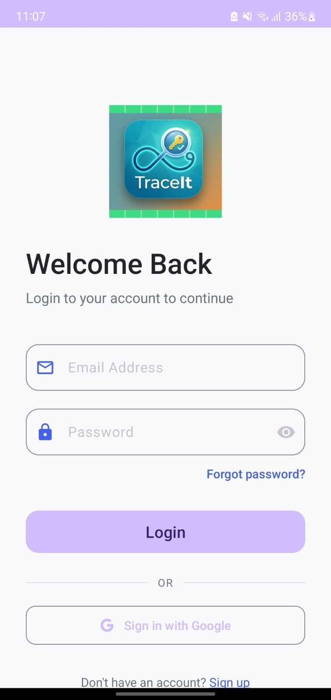
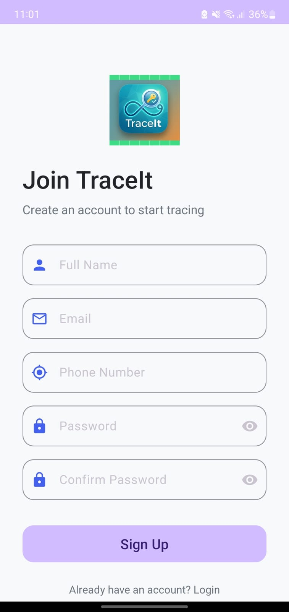
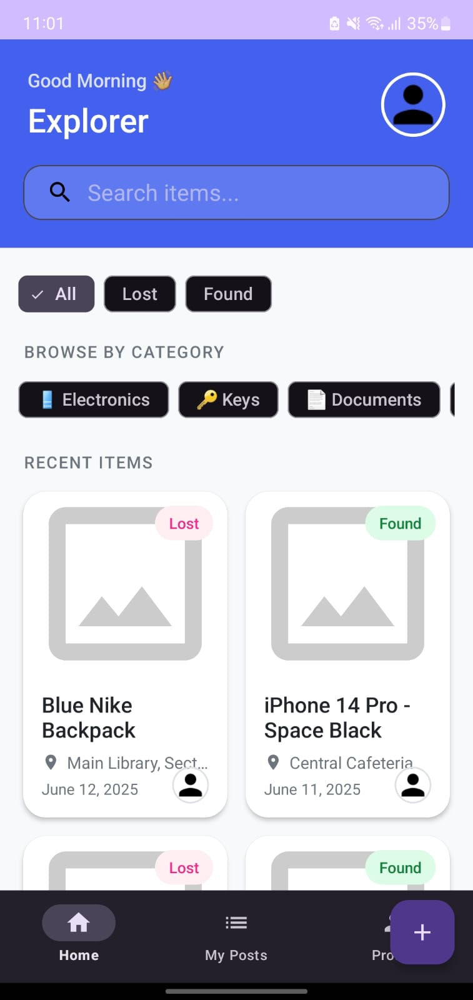
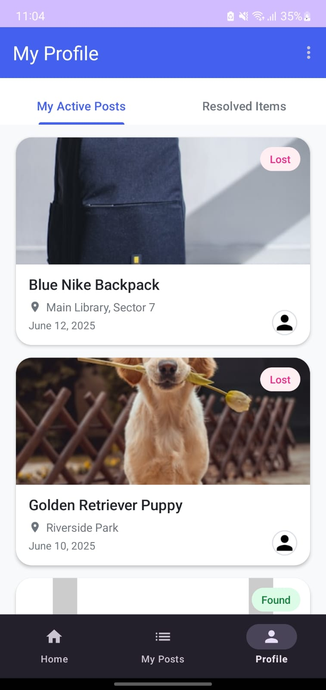
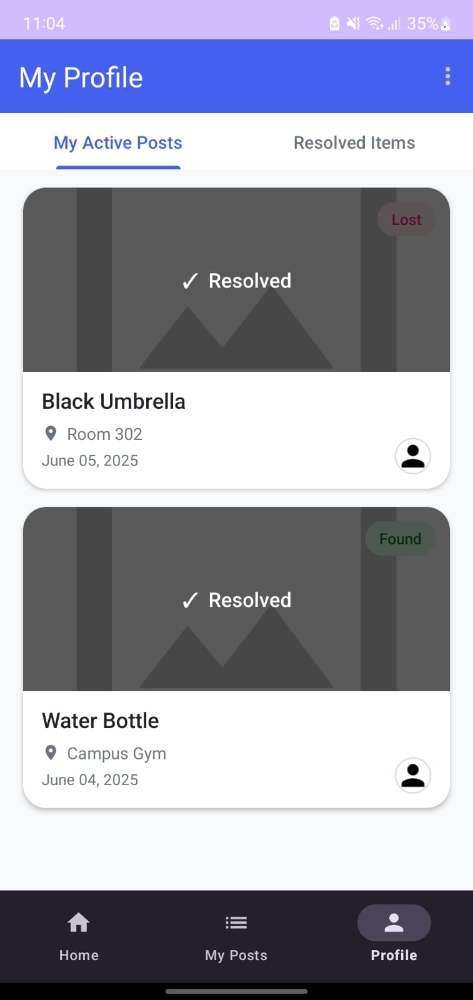
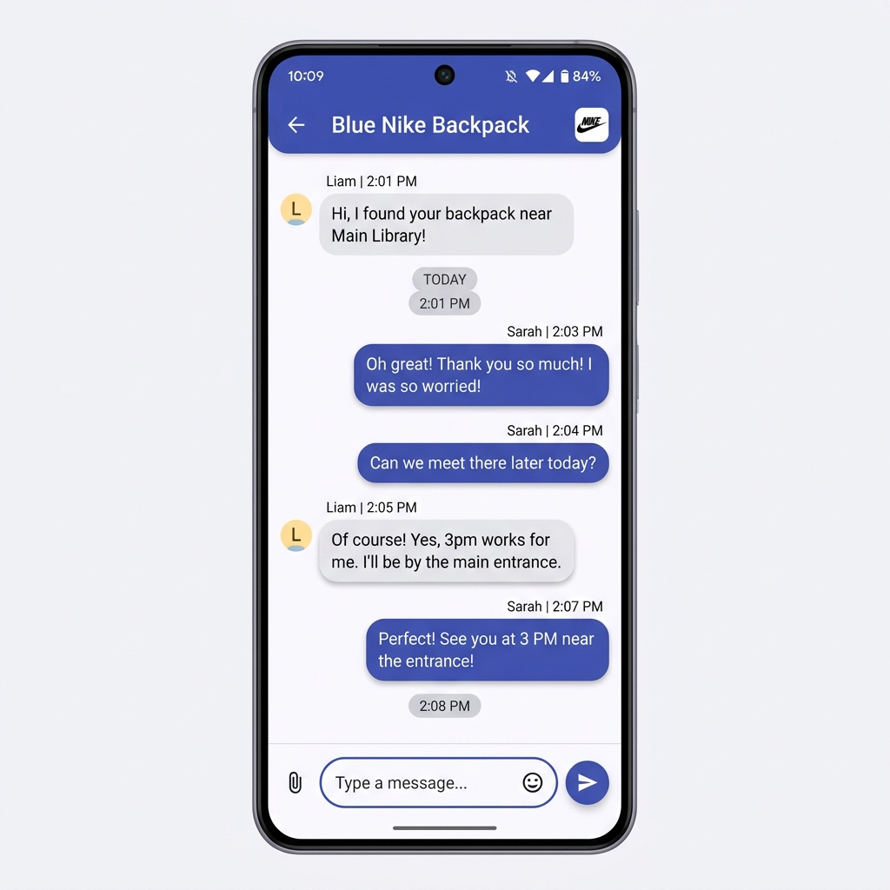

One-tap sign in
Email & password or Google Sign-In via Firebase Authentication. No friction between you and the feed.
Community lost & found, on your phone
TraceIt connects people who've lost something with people who've found it — with live location tags, a real-time chat, and a feed your whole campus or neighbourhood actually checks.
See it in action
The journey of a lost item
Browse the live feed first — maybe your item's already been posted as Found.
Tap the + button. Add a photo, pick "I Lost It," and let GPS tag the spot.
Your post joins the community feed — searchable, filterable, visible to everyone nearby.
Message the finder or owner directly. Verify details, agree on a place to meet.
Reunited! The post moves to your profile's Resolved tab — a little record of every win.
What's inside
Email & password or Google Sign-In via Firebase Authentication. No friction between you and the feed.
A staggered grid of every item nearby, with live search and category filters — Electronics, Keys, Documents, and more.
Drop a pin without typing an address. Every post carries the real location it was lost or found.
Firestore-powered messaging so you can coordinate handovers without leaving the app.
Track Active Posts and a growing Resolved Items archive — proof your stuff found its way home.
Add a clear photo with Glide-powered image loading — the fastest way for someone to recognise their own item.
Every screen, crafted
Splash

Login

Sign Up
Home Feed

Browse Items

My Posts

Resolved

Chat
The best tab in the app
Once an item's back with its owner, one tap moves it to Resolved — a quiet, growing record of umbrellas, water bottles, and backpacks that made it home.
Under the hood
Ready when you are
TraceIt is open source and built for communities — campuses, offices, neighbourhoods. Clone it, run it, or just start tracing.